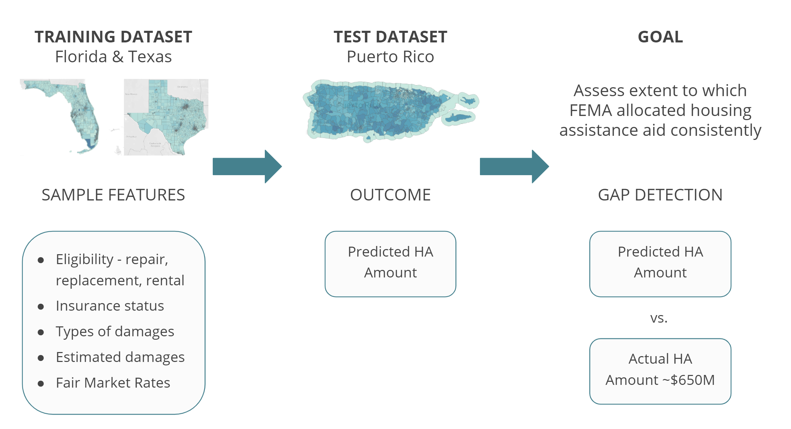
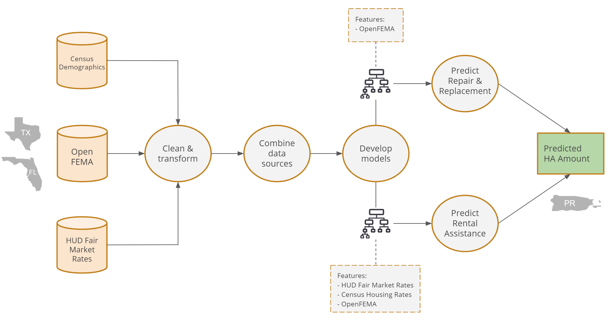

This research will leverage machine learning to train a model on the pertinent features used by FEMA when assessing the amount of housing assistance aid claimants are entitled to receive. The model will be trained on hurricanes Irma and Harvey – which hit Florida and Texas, respectively – and will then predict the Housing Assistance (HA) Amount which Puerto Rico should have received in the wake of hurricane Maria, assuming equitable allocation of financial aid for those claimants that were inspected.
The premise which underlies this approach is that if the HA Amount estimated by the model is consistent with the payments received, then this is confirmation that FEMA’s HA Program has been administered consistently and that Puerto Rican residents have equal access to the provisions set forth in the guidelines. Alternatively, the magnitude of any difference between the predicted HA Amount and the actual HA Amount received, will indicate the extent to which there is inequitable access or allocation of housing assistance aid.

Modeling Pipeline
The modeling pipeline consists of several stages which can broadly be summarized as data ingestion, feature exploration and model development. The Open FEMA data serves as the foundation for this research and was augmented with Census housing demographics and HUD Fair Market Rates to ensure the models could be trained on many of the pertinent features used by FEMA when assessing claims for financial aid, as outlined in the IHP Unified Guidelines. The datasets were then cleaned, deduplicated and combined to create a master database consisting of 3.2M records, primed for exploratory data analysis and model development.
The feature exploration phase was iterative in nature and the analysis of prediction errors was an integral component of the model development phase. Two models were ultimately selected – one which would predict the repair/replacement amounts associated with property damage, another which would predict the rental assistance amount required to pay for temporary housing. Further details of the model selection process is outlined in the Model Performance section. Once the optimal models were determined, the HA Amount for Puerto Rico was predicted, and subsequently compared to the actual HA Amount allocated by FEMA.
